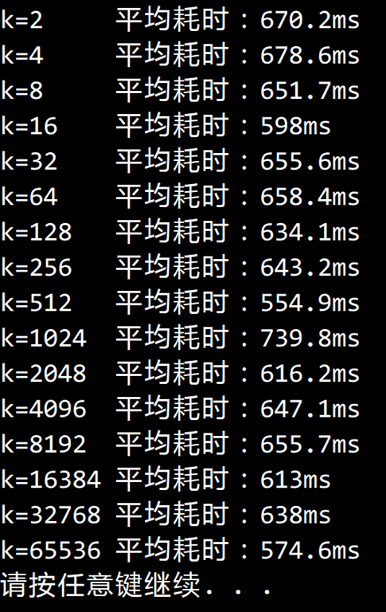

© 2022 《算法（第四版）》C# 题解 | Provided By 沈星繁
搜索解答
目前已完成到 3.2
2.2.25
上次更新：2022-02-18
发现了题解错误/代码缺陷/排版问题？请点这里：如何：提交反馈 。
解答
事实上 k 的取值无关紧要，实验也证明了这一点。

算法大致可以分为以下几个步骤 首先将数组划为 k 份，
用一个数组 mids 记录这 k 个子数组的分割位置
随后递归的调用 Sort 方法，将这 k 个子数组排序 随后将这 k 个子数组归并，
每次归并时遍历取 k 个子数组中值最小的一个，
然后对应子数组的指示器 + 1 上面这一步是 的，
可以用堆或者败者树优化为对数级别
代码
using System;
using System.Diagnostics;
namespace Merge
{
/// <summary>
/// k 路归并排序。
/// </summary>
public class MergeSortKWay : BaseSort
{
/// <summary>
/// 同时归并的数组数目。
/// </summary>
public int K { get; set; }
/// <summary>
/// 默认构造函数。
/// </summary>
public MergeSortKWay() { this.K = 2; }
/// <summary>
/// 用 k 向归并排序对数组 a 进行排序。
/// </summary>
/// <typeparam name="T"></typeparam>
/// <param name="a"></param>
/// <exception cref="ArgumentOutOfRangeException">数组长度小于 K 值时抛出异常。</exception>
public override void Sort<T>(T[] a)
{
if (this.K > a.Length)
throw new ArgumentOutOfRangeException("数组长度不能小于 K 值！");
T[] aux = new T[a.Length];
Sort(a, aux, 0, a.Length - 1);
Debug.Assert(IsSorted(a));
}
/// <summary>
/// 自顶向下地对数组指定范围内进行 k 向归并排序，需要辅助数组。
/// </summary>
/// <typeparam name="T">需要排序的元素类型。</typeparam>
/// <param name="a">原数组。</param>
/// <param name="aux">辅助数组。</param>
/// <param name="lo">排序范围起点。</param>
/// <param name="hi">排序范围终点。</param>
private void Sort<T>(T[] a, T[] aux, int lo, int hi) where T : IComparable<T>
{
if (hi <= lo) // 小于或等于一个元素
return;
int[] mids = new int[this.K - 1];
int steps = (hi - lo) / this.K;
mids[0] = lo + steps;
for (int i = 1; i < this.K - 1; i++)
{
mids[i] = mids[i - 1] + steps;
if (mids[i] > hi) // 防止溢出
mids[i] = hi;
}
Sort(a, aux, lo, mids[0]);
for (int i = 1; i < this.K - 1; i++)
{
Sort(a, aux, mids[i - 1] + 1, mids[i]);
}
Sort(a, aux, mids[this.K - 2] + 1, hi);
Merge(a, aux, lo, mids, hi);
}
/// <summary>
/// 将指定范围内的元素归并。
/// </summary>
/// <typeparam name="T">数组元素类型。</typeparam>
/// <param name="a">原数组。</param>
/// <param name="aux">辅助数组。</param>
/// <param name="lo">范围起点。</param>
/// <param name="mids">范围中间点。</param>
/// <param name="hi">范围终点。</param>
private void Merge<T>(T[] a, T[] aux, int lo, int[] mids, int hi) where T : IComparable<T>
{
for (int l = lo; l <= hi; l++)
{
aux[l] = a[l];
}
int[] pointers = new int[this.K]; // 标记每个数组的当前归并位置
pointers[0] = lo; // 开始时归并位置处于每个子数组的起始
for (int i = 1; i < this.K; i++)
{
pointers[i] = mids[i - 1] + 1;
}
// 开始归并
for (int i = lo; i <= hi; i++)
{
// 找到最小值
T min;
int minPointerIndex = 0;
bool isInit = true;
if (pointers[this.K - 1] > hi)
{
min = default(T); // 初始化以避免编译错误
}
else
{
min = aux[pointers[this.K - 1]];
minPointerIndex = this.K - 1;
isInit = false;
}
for (int j = 0; j < this.K - 1; j++)
{
if (pointers[j] > mids[j]) // 当前数组已经用完
continue;
if (isInit) // 第一次赋值
{
isInit = false;
min = aux[pointers[j]];
minPointerIndex = j;
continue;
}
if (Less(aux[pointers[j]], min))
{
min = aux[pointers[j]];
minPointerIndex = j;
}
}
// 将最小值赋给归并数组，对应子数组的归并位置+1
a[i] = min;
pointers[minPointerIndex]++;
}
}
}
}